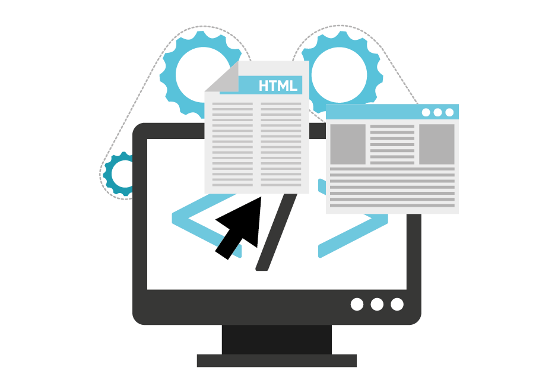

Hello
I am just an ordinary kid from Indonesia. Came to Canada in 2015 to pursue my dream to be educated in one of the best universities in the world. And here I am as a UBC graduate class of 2019. A hardworker who have great ambitions and million dreams. I am not afraid to set the bar high because if someone can achieve it, why can't I? I love to learn new things because I do not want to feel left out, so I can share and have conversations about what those things are with anyone. Eventhough some of my dreams have already become reality, the list doesn't stop there. I do have plenty more and I would love to tell you about it! So, check me out!
My Skills

|
Data AnalysisSince I do have background in Mathematics, I am in love with numbers. I am amazed by how powerful numbers are. They can tell a story and help not only to make business decisions, but also to make life decisions in general. The important skills that are required in Data Analysis, in my opinion, are problem solving, attention to details, and critical thinking. These so called soft-skills are the key for the hard-skills (i.e. knowledge) to be enhanced. |
ProgrammingAlthough I do not have a degree in Computer Science, like most people do nowadays, I am also experienced in programming. I learnt programming mostly through online course, through friends, through hackatons, and through self-development by making my own projects. Moreover, back in the university, I also took many upper level computer science courses, from software engineering to internet computing. Other than because of the high demand of programmer, the reason I enjoy programming is because I like the way I can enhance my creativity and imagination. I believe there is still a lot for me to learn, but with my soft skill to adapt easily, I also believe it will be easy for me to adjust to new programming languages and new projects. |
 |